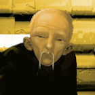
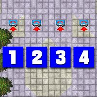
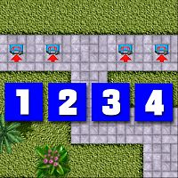

San Andreas 1 (Mandarin Mayhem)

Uncle Fu
GTA1 で最多のミッション数を誇るチャプターです。しかし、他のマップと違い、1つのミッションで複数の内容をオーダーされることがあまりないので、意外とさくさく進むと思います。
このチャプターは NW Richman からスタートします。指示を受けるため、W Market の公衆電話に向かってください。
| ボス | Uncle Fu |
|---|---|
| 目標スコア | 200万 |
| ミッション | 18 |
公衆電話ミッション (W Market)
この4つの公衆電話はそれぞれミッション1,4,6および9につながっています。攻略はどのミッションからでも結構です。
| W Market |
 |
Mission 1
- 任務
- 乗り捨てられた車を回収する
- フロー
-
 → SW Chinatown
→ (60秒)
→ S Potato
→ SW Chinatown
→ SW Chinatown
→ (60秒)
→ S Potato
→ SW Chinatown
SW Chinatown の電話に向かってください。
電話に出ると、Hung Well が S Potato に乗り捨てたという車の回収に向かいます。車を発見したら、SW Chinatown のガレージまで運転してください。
ガレージに車を収めるとミッション完了です。
| スコア | チェックポイント |
|---|---|
| +1,000 | Hung Well が乗り捨てた Porka に乗車 |
| +25,000 | Porka を SW Chinatown のガレージに収める (Mission Complete) |
ここまで来た方なら何てことはないミッションでしょう。
Mission 2
- 任務
- 縁起の悪い車の色を塗り替える
- フロー
- (Mission 1) →{→ NE Woodside → E Telephone Hill → SW Chinatown}(120秒)
対象の車は NE Woodside にあります。車を発見したら、E Telephone Hill のペイントショップで色を塗り替えてください。
その後、SW Chinatown ガレージに車を収めるとミッション完了です。
| スコア | チェックポイント |
|---|---|
| +5,000 | Mamba に乗車 |
| +30,000 | 塗り替え済みの Mamba を SW Chinatown のガレージに収める (Mission Complete) |
開始から終了までを120秒以内に抑える必要があります。Mission 1終了後、Woodside 方面に向かい始めた方がいいでしょう。
Mission 3
- 任務
- 銀行で不正出金をする男を迎えに行く
- フロー
-
(Mission 2)
→ NW Marina
→ E Sunview(
 )
→ SW Chinatown
)
→ SW Chinatown
Pu Ling という男から話を聞くため、NW Marina に向かいます。
しばらく待っていると、Pu Ling が車に乗って現れます。話を聞いた後、彼の乗ってきた Vulture に乗って、E Sunview の銀行に向かいます。
銀行の前にいる Chu Ying を乗せたら、SW Chinatown ガレージに車を収めるとミッション完了です。
| スコア | チェックポイント |
|---|---|
| +35,000 | Chu Ying を連れて SW Chinatown のガレージに戻る (Mission Complete) |
Mission 4
- 任務
- レストランの経営者から保護料を徴収する
- フロー
-
 → NW Marina
→ E Sunview()
→ SW Chinatown
→ NW Marina
→ E Sunview()
→ SW Chinatown
SW Atlantic Heights の電話に向かってください。
電話に出ると、レストランから保護料を徴収するように指示されます。C Glen Wood の Pu Ping、E Wood Hill の Ho Ching、SW Aye Valley の Lei Ming、NE Woodside の Chu Wing Dung から金を受け取ったら、SW Chinatown のガレージまで金を届けるとミッション完了です。
| スコア | チェックポイント |
|---|---|
| +30,000 | 回収した金を持って SW Chinatown のガレージに戻る (Mission Complete) |
Mission 5
- 任務
- Fu Ming を見せしめに殺す
- フロー
- (Mission 4) → (somewhere)
Fu Ming の乗った Itali GTO は S Eagleside から S Atlantic Heights に向かっていきます。
Fu Ming が目的地に着く前に殺すとミッション完了です。
| スコア | チェックポイント |
|---|---|
| +25,000 | Fu Ming が目的地に着く前に彼を殺す (Mission Complete) |
Mission 6
- 任務
- No Chin の一味を始末する
- フロー
-
 → W Woodside
→ C Aye Valley
→ W Woodside
→ C Aye Valley
W Woodside の電話に向かってください。
電話に出ると、No Chin の一味を始末するように指示されます。彼らは C Aye Valley にいます。
現場に着くと、連中が襲ってきますので、全員片づけてください。これでミッション完了です。
| スコア | チェックポイント |
|---|---|
| (各)+1,000 | 連中の一人を殺す |
| +40,000 | 連中を全員殺す (Mission Complete) |
Mission 7
- 任務
- No Chin によって町中に仕掛けられた爆弾を解除する
- フロー
- (Mission 6) → S Richman → (60秒) → W Woodside → SW Atlantic Heights → (90秒) → W Woodside → NE Sunview → (60秒) → W Woodside → S Sunview → (60秒) → W Woodside
最初の爆弾が S Richman にあるというので、そこに向かってください。
駐車してある Mamba に乗り込むと、爆発のカウントダウンが始まります。急いで W Woodside の Hang Yu の所へ行き、爆弾を解除してください。
車を元の場所に戻すと、次の爆弾は SW Atlantic Heights にある El Burro の車に仕掛けられていることを聞かされます。
その車に乗り込むと、再びカウントダウンが始まりますので、先ほどの Hang Yu の所で爆弾を解除してください。
車を戻すと、今度は Hung Well の車が狙われているという連絡が入ります。NE Sunview に停まっている Flamer に乗り込んだら、同じように解除して、元の場所に戻してください。
最後に、S Sunview に停まっている Limousine を処理するとミッション完了です。
| スコア | チェックポイント |
|---|---|
| (各)+1000 | 爆弾を解除する |
| +40,000 | すべての爆弾を解除する (Mission Complete) |
Mission 8
- 任務
- No Chin の高飛びを阻止する
- フロー
- (Mission 7) → SE Sailors Wharf → S Sunview
No Chin の居場所を聞き出すため、奴の仲間がいる SE Sailors Wharf に向かってください。
連中のうちの一人を殺すと、残りの奴らが逃げ出します。追いかけて殴ってやると、No Chin がボートで逃げようとしていることを白状します。
S Sunview で Rocket Launcher を取ったら、奴の乗ったボートが通るのを待ってください。ボートにうまく命中するとミッション完了です。
| スコア | チェックポイント |
|---|---|
| +30,000 | No Chin を殺す (Mission Complete) |
ボートは非常にレアです。よーく見ておきましょう。
Mission 9
- 任務
- Yu Pong が遺した車を回収する
- フロー
-
 → SE Marina
→ (somewhere)
→ E Aye Valley
→ SW Sailors Wharf
→ SE Marina
→ (somewhere)
→ E Aye Valley
→ SW Sailors Wharf
SE Marina の電話に向かってください。
電話に出ると、Yu Pong が遺したという車の回収を指示されます。車は警察の施設内にあり、通常の車では入れないため、パトカーが必要になります。
手配されるなどしてパトカーを入手したら、E Aye Valley の施設に向かってください。駐車してある Portsmouth に乗車したら、SW Sailors Wharf のガレージまで運転してください。
ガレージに車を収めるとミッション完了です。
| スコア | チェックポイント |
|---|---|
| +1,000 | パトカーを入手する |
| +1,000 | Yu Pong が遺した Portsmouth に乗車 |
| +40,000 | Portsmouth を SW Sailors Wharf のガレージに収める (Mission Complete) |
Mission 10
- 任務
- 裏切り者と思しい Wun Tun Chun の足取りを追う
- フロー
- (Mission 9) → SW Chinatown → NE Market → { → C Sailors Wharf → NE Market}(60秒)
Wun Tun Chun は SW Chinatown にいます。
現場に着くと、Wun Tun がどこかへ向かって走り出しますので、追跡してください。しばらくすると、NE Market の Jimmy の隠れ家に入っていきます。
奴が裏切り者と判明するため、隠れ家の前に停めてある Bug を盗んでください。車を運転し、C Sailors Wharf で爆弾を仕掛けたら、再び元の場所に戻してください。
何も知らない Wun Tun が車に乗り込むと爆発し、ミッション完了です。
| スコア | チェックポイント |
|---|---|
| +5,000 | Wun Tun の Bug に乗車 |
| +35,000 | Wun Tun を 爆弾で始末する (Mission Complete) |
ワンタンなんて名前、本当にあるんでしょうか。
公衆電話ミッション (N Sunview)
W Market の電話ミッションがすべて終わると、今度はこちらに移されます。この4つの公衆電話はそれぞれミッション11,13,15および17につながっています。攻略はどのミッションからでも結構です。
| N Sunview |
 |
Mission 11
- 任務
- 警察にヤキを入れる
- フロー
-
→ E Sunview
→ E Aye Valley
→ SE Telephone Hill
E Sunview の電話に向かってください。
電話に出た後、適当にパトカーを入手してください。E Aye Valley で爆弾を仕掛けたら、SE Telephone Hill にあるバーガーショップに向かいます。駐車場に車を止め、爆弾を作動させたら、車から離れてください。
数秒後に爆発が起こり、ミッション完了です。
| スコア | チェックポイント |
|---|---|
| +5,000 | パトカーを入手する |
| +40,000 | バーガーショップで車を爆発させる (Mission Complete) |
Mission 12
- 任務
- Bryson という男の指示に従う
- フロー
- (Mission 11) → NW Glen Wood → (80秒) → S Marina → (100秒) → E Woodside → (30秒) → E Woodside → (60秒) → SE Soviet Hill
Bryson という男の指示で、NW Glen Wood にあるカバンを取りに行きます。
すると、カバンに爆弾が仕掛けられていることを聞かされます。カウントダウンが始まりますので、急いで S Marina に向かってください。
電話に出ると、E Woodside に指定の車で行くように指示されます。
今度は、徒歩で北に向かってください。車を使うとミッション失敗です。
駐車してある 4 X 4 に乗り込んだら、SE Soviet Hill の電話に出てください。
すると武器を持った敵が4人現れます。全員倒すとミッション完了です。
| スコア | チェックポイント |
|---|---|
| +1,000 | S Marina の Bug に乗り込む |
| +1,000 | E Woodside の 4 X 4 に乗り込む |
| (各)+1,000 | 敵を殺す |
| +40,000 | 敵を全員殺す (Mission Complete) |
Mission 13
- 任務
- ライバルと腕を競う。
- フロー
-
→ SE Market
→ (120秒)
→ N Eagleside 付近
→ W Sunview
→ SW Woodside
まず、ライバルと腕を競わされます。SW Woodside にいくとスタートしますので、NE Sailors Wharf にいるターゲットを先に殺してください。ライバルを殺したり、車を使うとだめです。ライバルに先を越されるとミッション失敗ですが、このとき彼を殺すと「BAD LOSER BONUS!（往生際が悪い敗者ボーナス！）」ボーナスが入ります。
あたりを走るタクシーを奪ったら、N Marina にいる男を乗せてください。車を W Woodside の隠れ家に持っていきます。
すると、男も一緒に降りるので、奴を殺すとミッション完了です。
| スコア | チェックポイント |
|---|---|
| +1,000 | タクシーを入手する |
| +1,000 | N Marina にいる男を乗せる |
| +1,000 | 車を W Woodside の隠れ家に持っていく |
| +41,000 | 男を殺す (Mission Complete) |
Mission 14
- 任務
- 証拠をつかんだ地区検事を始末する
- フロー
- (Mission 13) → NE Richman
検事はボディーガード2人を引き連れて NE Richman 付近をジョギング中です。この検事を殺すとミッション完了です。
| スコア | チェックポイント |
|---|---|
| +40,000 | 検事を殺す (Mission Complete) |
発砲すると反撃されるので、十分に引きつけてから撃ちましょう。
Mission 15
- 任務
- 保護料を払わない市長に見せしめをする
- フロー
-
→ SE Market
→ (120秒)
→ N Eagleside 付近
→ W Sunview
→ SW Woodside
SE Market の電話に向かってください。
電話に出たら、120秒以内に N Eagleside 付近を走行中の Juggernaut を奪ってください。運転手は反撃をしてくるので気をつけてください。
その車で、W Sunview の施設に行き、駐車してある Tanker に乗り込んでください。
SW Woodside の橋の中央に停めたら、爆弾を作動させてトラックから離れてください。数秒後、橋が破壊されてミッション完了です。
| スコア | チェックポイント |
|---|---|
| +1,000 | Tanker を盗む |
| +40,000 | 爆弾で橋を破壊する (Mission Complete) |
壊した橋は戻りませんので気をつけてください。
Mission 16
- 任務
- Don Traegeri という人物を殺す
- フロー
- (Mission 15) → E Excalibur → (somewhere)
E Excalibur にいる Chow Yun がボディーガードとなってくれます。
連中に近づくと攻撃を受けます。雑魚はボディーガードに任せておき、リムジンで走り出した Don Traegeri を追いかけてください。奴を殺すとミッション完了です。
| スコア | チェックポイント |
|---|---|
| +1,000 | Chow Yun と落ち合う |
| +50,000 | Don Traegeri を殺す (Mission Complete) |
Mission 17
- 任務
- 買収された弁護士を始末する
- フロー
-
→ NW Marina
→ C Woodside 付近
→ NE Woodside 付近
→ W Atlantic Heights 付近
→ E Excalibur 付近
→ N Sunview
→ N Sunview
NW Marina の電話に向かってください。
電話に出ると、買収された弁護士を始末するように指示されます。Kivlane 弁護士は C Woodside 付近にいます。見つけたら、彼を殺してください。
Watersane 弁護士は NE Woodside 付近を走行中です。車ごと始末してください。
次に、証拠を警察に届けようとしているメッセンジャーが W Atlantic Heights にいますので、殺します。
E Excalibur 付近を走行中の Watsane 弁護士は反撃してきますので、気をつけて対応してください。
機密書類を盗んだという Johnsane 弁護士は N Sunview にいますので、話を聞きに行ってください。隠し場所を白状させたら、N Sunview にある書類を回収するとミッション完了です。なお、白状後、彼を殺すと「GRATUITOUS VIOLENCE BONUS!（オプション殺人ボーナス！）」ボーナスが入ります。
| スコア | チェックポイント |
|---|---|
| +1,000 | Kivlane 弁護士を殺す |
| +1,000 | Watersane 弁護士を殺す |
| +1,000 | メッセンジャーを殺す |
| +1,000 | Watsane 弁護士を殺す |
| +25,000 | (オプション)Johnsane 弁護士が機密書類の隠し場所を白状後、彼を殺す |
| +45,000 | 機密を回収する (Mission Complete) |
ミッション終了後、次のミッションに備えて Aye Valley に向かい始めるといいです。
Mission 18
- 任務
- Keith Ham Yel Tun が犯したヘマの埋め合わせをする
- フロー
- (Mission 17) → (120秒) → SW Aye Valley → W Telephone Hill → NE Wood Hill → SW Woodside → C Sailors Wharf
120秒以内に SW Aye Valley のビルの屋上にいる Keith に会ってください。
彼は4つのカバンの隠し場所を白状して自殺してしまいます。ボスの指示を受け、すべてのカバンを回収するとミッション完了です。
| カバン | 場所 | 場所の説明 |
|---|---|---|
| 一つ目 | W Telephone Hill (18,50) | 公衆電話南にある階段を下りたところ |
| 二つ目 | NE Wood Hill (99,41) | ビルの中庭 |
| 三つ目 | SW Woodside (198,190) | 川沿いの砂地。階段を下りたところ |
| 四つ目 | C Sailors Wharf (125,176) | 倉庫街。路地の突き当たり |
| スコア | チェックポイント |
|---|---|
| +40,000 | すべてのカバンを回収する (Mission Complete) |
カバンに近づかないと矢印が出ないため、探しづらいですが、制限時間はありませんのでじっくり探してください。
チャプタークリア
クリアポイントの200万点を獲得したら SW Chinatown にいる Uncle Fu に会いに行ってください。